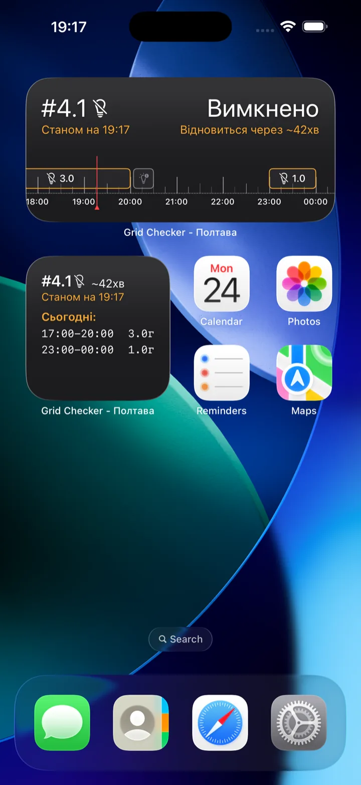
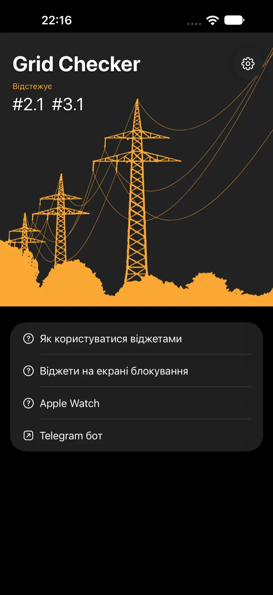
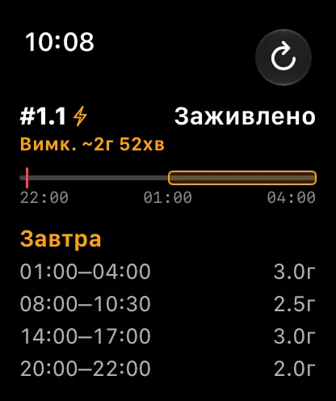
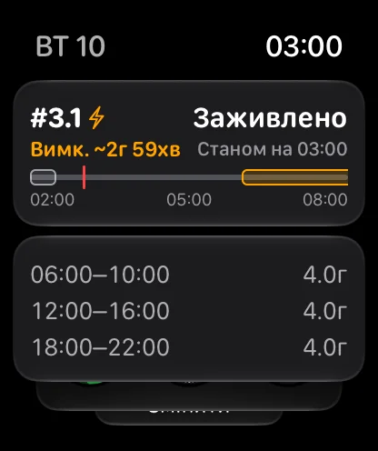
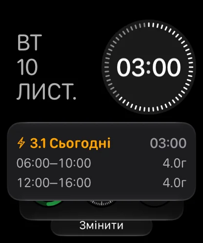
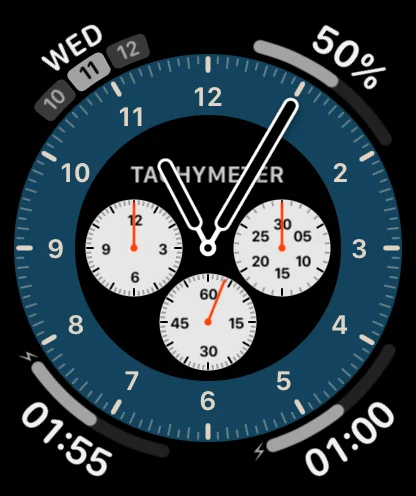
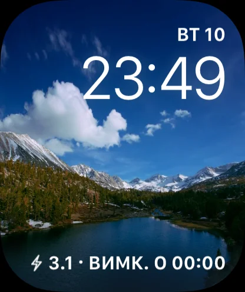

Полтава та область
Графік відключень світла завжди під рукою
Віджети для iPhone, Apple Watch та Android показують, чи є зараз світло у вашій черзі, коли його вимкнуть або ввімкнуть, і графік на сьогодні та завтра.
Що вміє застосунок
-
Віджети на головному екрані
Три розміри: стан живлення, таймлайн і список відключень на сьогодні та завтра.
-
Екран блокування
Чи є світло і коли наступна зміна — одним поглядом, не розблоковуючи телефон.
-
Apple Watch
Застосунок, віджети в Динамічному стосі та функції циферблата.
-
Будь-яка черга
Кожен віджет показує свою чергу. Знайдіть її за назвою вулиці або номером.
-
Автоматичне оновлення
Графік оновлюється кожні 15 хвилин і щойно його змінюють.
-
Без реклами й трекінгу
Без акаунтів, реклами та аналітики. Лише публічні дані графіків.
iPhone
Віджети підлаштовуються під світлу й темну тему.


Apple Watch
Застосунок, віджети в Динамічному стосі та функції для будь-якого циферблата.





Питання та відповіді
Як додати віджети, вибрати чергу та що робити, якщо щось не працює.
Як користуватися віджетами на головному екрані?
- Додайте віджет на головний екран
Утримуйте палець на вільному місці головного екрана, натисніть «Редагувати», а потім «Додати віджет». Знайдіть «Grid Checker» і оберіть потрібний розмір віджета. Віджети також можна додати на сторінку віджетів ліворуч від головного екрана.
- Виберіть чергу
Утримуйте віджет і натисніть «Редагувати віджет». Торкніться «Черга» й оберіть чергу зі списку або введіть у поле пошуку назву вулиці чи номер черги.
- Додайте більше віджетів
Кожен віджет показує власну чергу, тож можна додати кілька віджетів для різних адрес. На головному екрані застосунку видно всі черги, які відстежують ваші віджети.
- Переглядайте ваш графік
Віджет показує поточний стан електропостачання та сьогоднішні відключення для своєї черги. Він оновлюється автоматично кожні 15 хвилин і після зміни графіка.
Як додати віджет на екран блокування?
- Додайте віджет на екран блокування
Утримуйте палець на екрані блокування, натисніть «Налаштувати» й оберіть екран блокування. Торкніться області віджетів під годинником і виберіть «Grid Checker» у списку.
- Виберіть чергу
Під час налаштування торкніться віджета один раз, щоб відкрити список віджетів, а потім торкніться його ще раз, щоб відкрити налаштування. Торкніться «Черга» й оберіть чергу або знайдіть свою вулицю.
- Збережіть зміни
Натисніть «Готово», щоб зберегти. Віджет на екрані блокування показує, чи є світло, і час поточного або наступного відключення.
Як користуватися застосунком на Apple Watch?
- Встановіть застосунок на годинник
Grid Checker для Apple Watch постачається разом із застосунком для iPhone. Якщо його ще немає на годиннику, відкрийте програму «Watch» на iPhone, знайдіть Grid Checker у розділі «Доступні програми» й натисніть «Інсталювати».
- Оберіть свою чергу
Відкрийте Grid Checker на годиннику й оберіть свою чергу. Щоб змінити її пізніше, прогорніть униз і натисніть «Вибрати чергу».
- Переглядайте ваш графік
Застосунок показує поточний стан електропостачання, шкалу часу та всі майбутні відключення на сьогодні й завтра. Натисніть круглу кнопку біля годинника, щоб завантажити найсвіжіший графік.
- Додайте віджети в Динамічний стос
На циферблаті прокрутіть колесо Digital Crown, щоб відкрити Динамічний стос, утримуйте його, натисніть «+» і знайдіть «Grid Checker». Оберіть «Таймлайн» — стан і шкала часу, «Список» — стан і два наступні відключення, або «Повний список» — три наступні відключення. Ці віджети також підходять для великих місць на деяких циферблатах.
- Додайте функції на циферблат
Утримуйте циферблат, натисніть «Змінити» й прогорніть до функцій циферблата. Торкніться місця й оберіть Grid Checker: «Таймер» показує, скільки лишилося до вимкнення чи відновлення світла, «Час зміни» — коли це станеться, а «Статус» — один рядок угорі циферблата. «Таймер» і «Час зміни» підходять для круглих і кутових місць.
- Оберіть чергу для кожного віджета
Кожен віджет і кожна функція циферблата показує власну чергу. Оберіть її під час додавання або пізніше — торкнувшись віджета під час редагування циферблата чи Динамічного стосу.
Оновлення графіка надходять на годинник швидше, якщо для Grid Checker увімкнено фонове оновлювання. Увімкніть його і на iPhone, і на годиннику: Параметри › Загальні › Фонове оновлювання. Якщо його вимкнено, застосунок і віджети все одно оновлюються, але рідше.
Віджети на циферблаті Apple Watch або в Динамічному стосі не оновлюються
Відкрийте Grid Checker на годиннику й один раз натисніть круглу кнопку оновлення біля годинника. Застосунок завантажить свіжий графік, а віджети й функції циферблата оновляться разом із ним.
Щоб оновлення надходили вчасно й надалі, перевірте, чи увімкнено фонове оновлювання для Grid Checker і на iPhone, і на годиннику: Параметри › Загальні › Фонове оновлювання.
Як отримувати сповіщення про зміну графіка чи перед вимкненням світла?
З міркувань надійності застосунок не надсилає сповіщень: система не гарантує, що вони прийдуть вчасно, а запізніле попередження про вимкнення світла може підвести.
Для сповіщень скористайтеся Telegram ботом @poltava_light_bot. Він повідомить, коли графік вашої черги зміниться, і попередить за 10 хвилин до вимкнення світла.
Зворотний зв’язок
Маєте питання, знайшли помилку чи хочете запропонувати ідею? Напишіть мені.